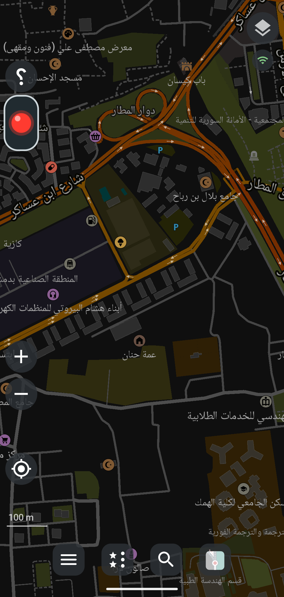
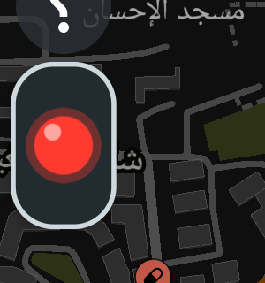
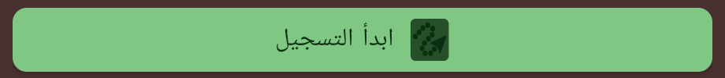
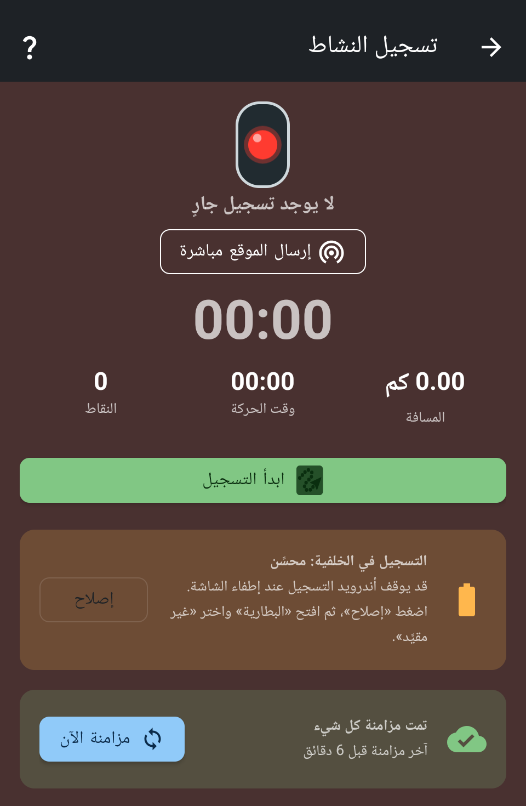
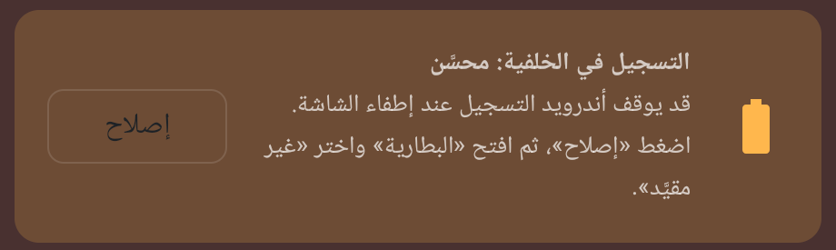
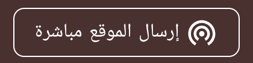

كل مشوار
يرسم الخريطة
يا سائق السرفيس والتكسي، إنت بتعرف طرق المدينة أكثر من أي خريطة.
سجّل مشاويرك بالتطبيق، وساعدنا نرسم خريطة سوريا المفتوحة: طرق أوضح، وإسعاف يوصل أسرع.

امسح الرمز بالصفحة الأخيرة ونزّل التطبيق ←
ليش مشوارك مهم؟
طرق حارتك بتستاهل
تنحط عالخريطة
كثير من طرق الأحياء السكنية بسوريا مو مرسومة عالخريطة أو مرسومة غلط، وما في معلومات مفتوحة عن الزحمة. إنت بتمشي هالطرق كل يوم، ومسارك بيكشف الناقص.
إسعاف بيوصل أسرع
لما نعرف أوقات التنقّل الحقيقية والزحمة، بيصير فيه يختار الإسعاف والدفاع المدني أسرع طريق.
طرق الحارات عالخريطة
متطوعو OpenStreetMap سوريا بيضيفوا الطرق الناقصة ويصلّحوا الغلط اعتماداً على مساراتك.
نفهم الزحمة
وين وإيمتى بتصير الزحمة، لنخطّط لنقل أفضل للسرافيس والباصات والتكاسي.
خريطة مجانية إلك
خرائط وملاحة بالعربي، بتشتغل بلا إنترنت، بلا إعلانات، ومفتوحة للكل.
هدفنا: 100 سائق بدمشق وريفها يرسموا الخريطة سوا. كن واحد منهم!
سجّل مشوارك
4 خطوات وبتبلّش
نزّل التطبيق وافتحه
خريطة سوريا بتتنزّل لحالها من أول تشغيل.
اضغط الزر الأحمر
على طرف الخريطة، أو من القائمة ← «تسجيل النشاط».

ادخل بالطريقة يلي بتريحك
اضغط «ابدأ التسجيل»
الضوء بيصير أخضر. «إيقاف مؤقت» وقت الاستراحة، و«إيقاف» بآخر الوردية.


نصائح السائق
- حط الموبايل عالشاحن بالسيارة.
- ما بدك إنترنت: التسجيل بينحفظ عالموبايل وبيترسل لحاله لما يرجع النت.
- سجّل الوردية كلها، مو بس المشاوير الطويلة.
- خلّي الموقع (GPS) شغّال ودقيق.
خلّي التسجيل شغّال والشاشة مطفية
إذا شفت «محسَّن» بالبرتقالي، اضغط «إصلاح» ← استخدام التطبيق للبطارية ← اختار «غير مقيَّد». هيك ما بيوقّف أندرويد التسجيل.

شارك موقعك مباشرة
زر «إرسال الموقع مباشرة» بيبعت موقعك كل 5 ثوانٍ طالما في إنترنت.
ليش؟ لنشوف حركة السير لحظة بلحظة ونعرف وين الزحمة هلّق.
شغّله وقت الشغل، وطفيه من الإشعار متى ما بدك.

بياناتك بأمان
- التسجيل بس لما إنت تبدأه
- بتوقّفه متى ما بدك
- ما منطلب اسم ولا جهات اتصال
- ما منبيع البيانات وما في إعلانات
- منشارك بس أرقام مجمّعة بلا هوية
- الخريطة بتشتغل بلا حساب
نزّل التطبيق
وابدأ مشوارك الأول
organicmaps.openstreetmap.sy
لأجهزة أندرويد. للسؤال أو المساعدة، تواصل مع فريق OpenStreetMap سوريا.بيانات الخريطة © مساهمو OpenStreetMap (ODbL) · مبني على Organic Maps (Apache 2.0)، وليس تابعاً له رسمياً.